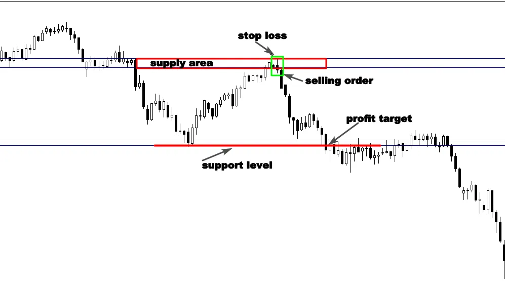

One of the most difficult markets to predict can be the sideways and
ranging markets, i always recommend traders to focus on trading
trending markets, but the problem is that the markets spend more
than 70 % of their time in ranging motion.
If you focus just on trending markets, you will probably leave lot of
money on the table, this is the reason why learning how to approach
range bound market is a must if you want to make decent living trading
financial markets.
When the market stop making higher highs and higher lows in case of an uptrend or lower highs and lower lows in case of a downtrend, the price starts acting between specific high price and low price. This is a clear signal that the market is ranging and no longer trending. See the illustration below:
As you see in the example above, the market is trendless, it is trading between horizontal support and resistance, and you can’t apply the same techniques that you use in trending market to trade engulfing bar patterns in range bound markets.
Let me give you an example, when you are driving your car, you don’t
always drive the same way, if you are driving downtown, you try to
drive slowly, because you know that driving fast can put your life or
other’s life in danger
But when you are driving in a highway, you’re driving style changes
completely, because you know that you can drive fast. So, you always
try to adapt your driving style to the appropriate situation.
You have to do the same thing when you are trading the engulfing bar
pattern, because all price action strategies we discussed before will
not work in range bound markets, and you have to use the right
techniques that fit these market conditions.
Before talking about the right way to trade trendless markets, you
have to be selective about trading range bound markets to protect
your trading account, because not all sideways markets are worth
trading. You have to know how to differentiate between sideways and
choppy markets.
See the illustration below about choppy markets:
As it is illustrated above, the market trades in a crazy way, we can’t
identify major support levels and resistance. You have to stay away
from these types of markets, otherwise, you will definitively damage
your trading account.
Trading the engulfing bar candle in range bound market is very simple,
the first strategy is going to be about trading this price action pattern
from major support and resistance levels like we see below:
The second strategy is to trade the breakout of the range or to wait for the pullback. See the illustration below :

The third strategy is to trade the false breakout of the major support or resistance level.
False breakouts are one of the most powerful price action strategies,
it occurs in all types of markets, and if you know how to use it in
combination with the engulfing bar pattern in a major support level or
resistance, you will make money in the market, because you will buy
intelligently the bottoms and sell the tops.
See the illustration below:
Supply and demand areas are more powerful than support and
resistance, it is the place where banks and institutions are buying and
selling in the market, if you can identify these turning points, you will
make a difference in your trading account.
To trade the engulfing bar pattern successfully with supply and
demand areas, you have to be able to identify quality supply and
demand levels on a chart, according to my experience; there are three
factors that define quality supply and demand areas:
1-The strength of the move:
Pay more attention to the way the price leaves the zone, if the market
leaves the area quickly, this is an indication that banks and institutions
are there.
2-Good profit zone:
You have to make sure that the level provides a good risk/reward.
3-Bigger time frames:
The daily and 4-hour supply and demand areas are the most powerful
zones in the market.
The chart below shows a quality supply area, as you can see the move
was very strong, and that indicates that banks and institutions were
there.
The formation of an engulfing bar was a clear signal that the bears are
still willing to sell from the same price level.
See another example of these areas:
I think that it’s not complicated to identify these zones, because they are characterized by strong moves. The secret behind supply and demand areas is that big players put their pending orders there, when the market approaches these zones, we see a crazy move from these levels.
If you can combine trading supply and demand areas with the engulfing bar price action signal, you will increase your chances to make money as a trader.
So far you have learnt how to identify high probability setups in the
market; this doesn’t mean that all engulfing bar patterns are worth
trading.
Price action signals with low risk /reward ratios should be ignored.
Once the criteria for a high probability setup are in place, there is no
more analysis to be made, just make sure your trade has a potential of
2:1 risk to reward ratio.
I mean that the amount of money you will win has to be twice the
amount of money you will risk or more.
See an example below:

As you can see all the conditions were in place to take a buying order,
the market was ranging, as we discussed before, major demand and
supply zones are the best price levels in sideways markets.
The formation of an engulfing bar in the demand area is a good trading
opportunity, but you have to look at the risk /reward to make sure that
the trade respects your money management’s rules.
This trade has 3:1 risk to reward which increases your chances to be
winner in the long term, because if you risk 200 dollars in this trade,
you are likely to win 600 dollars. It is very important to calculate your
risk to reward ratio before taking any single trade.
Case study
Imagine you take 10 trades with 3:1 risk /reward on each single trade,
I mean when you win you get 600 dollars, and when the market goes
against you, you lose 200 dollars.
Let’s suppose you lost 7 trades and you won just 3 trades. Let’s do the
math to know if you are winner or loser.
Seven losing trades will cost you 1400 dollars, and 3 wining trades will
make you 1800 dollars.
As you see you lost seven trades, but you are still making money. This
is the magic of money management.
The entry and exit strategy
Don’t try to be smarter than the rest of traders, keep it simple, you
know what you are looking for, when you identify an engulfing bar
pattern, and you think all conditions are in place to execute your trade.
Take an order immediately after the price action signal forms, put your
stop loss below the candlestick pattern, and look at simply the chart to
find the next support or resistance level, this is going to be your profit
target.
See the illustration below:

When you set your protective stop and your target, don’t never look
back, let the market tell you if you are wrong or right. This will help
you trade successfully out of your emotions.
If the market goes against you, you will not feel good, it’s normal,
losing money can be emotionally painful, it is our human nature,
nobody wants to lose, especially when it is about money, in the trading
environment, you have to think differently, and accept the fact that
losing is a part of the game.
Studies have shown that successful traders don’t risk more than 2% of
their equity on each single trade.
If you are beginner, don’t risk more than 1%. Don’t risk money you
can’t afford on a single trade even if the engulfing bar pattern you
identify indicates a high probability signal.
No matter how smart you are, you have to think always in term of
probabilities, bear in mind that you can experience series of losing
trades, and if you risk too much money, you will not survive longer.